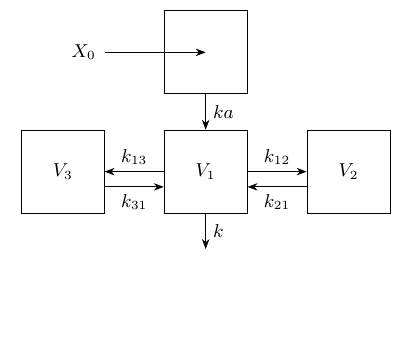
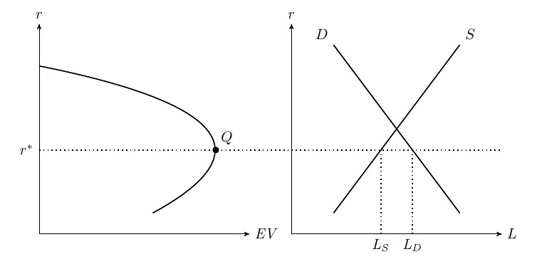

texPreview can be used for any TeX input beyond tabular environments, such as tikz. In the following examples we input a tikzpicture and an entire TeX file that contains a tikz environment.
# add tikz support to tex_opts
use_lib <- "\\usetikzlibrary{arrows,shapes,snakes,automata,backgrounds,arrows.meta,positioning}"
objpath <- file.path(getwd(),"tikz_files/figure-html")
if(!dir.exists(objpath))
dir.create(objpath,recursive = TRUE)
tex_opts$set(
fileDir = objpath, # path to save output
returnType = 'html',
usrPackages = build_usepackage(pkg = 'tikz',uselibrary = use_lib)
)tikz_examples <- list.files(system.file('examples/tikz',package = 'texPreview'),
pattern = 'tex$',full.names = TRUE)
tikz_code <- lapply(tikz_examples,
function(x) paste0(readLines(x),collapse = '\n'))
names(tikz_code) <- basename(tikz_examples)
Click to view TeX
\begin{tikzpicture}[
mysquare/.style={
rectangle,
draw=black,
fill=white,
fill opacity = 0.3,
text opacity=1,
inner sep=0pt,
minimum size=40pt,
font=\small,
align=center},
myarrow/.style={-Stealth},
node distance=0.6cm and 1.0cm
]
\node[mysquare] (c1) {Prol};
\node[mysquare,draw=white,minimum size=20pt,below left= of c1] (e) {$E_{drug}$};
\node[mysquare, minimum size=30pt,right=of c1] (t1) {Transit\\1};
\node[mysquare, minimum size=30pt, right=of t1] (t2) {Transit\\2};
\node[mysquare, minimum size=30pt, right=of t2] (t3) {Transit\\3};
\node[mysquare, right=of t3] (c2) {Circ};
\node[mysquare,draw=white,below= of c2] (k) {};
\node[mysquare,draw=white,minimum size=20pt,font=\small,above left= of c1] (kp) {$k_{prol}(=k_{tr})$};
\foreach \i/\j/\txt/\p/\r in {% start node/end node/text/position/rotation
c1/t1/$k_{tr}$/above/0,
t1/t2/$k_{tr}$/above/0,
t2/t3/$k_{tr}$/above/0,
t3/c2/$k_{tr}$/above/0,
c2/k/$k_{circ}(=k_{tr})$/right/90
}
\draw [myarrow] (\i) -- node[sloped,font=\small,\p,rotate=\r] {\txt} (\j);
\draw [-Stealth] (c2) edge[in=85,out=90,looseness=0.5] node[above]{Feedback=$\left( \frac{Circ_0}{Circ} \right)^\gamma$}(c1);
\path (c2) edge[in=315,out=225,looseness=0.5] node[below]{MTT}(c1);
\draw [-Stealth] (c1) edge [out=95,in=150,looseness=8] node[above left] {} (c1);
\draw [-Stealth] (e) edge [out=90,in=270] node[left] {} (kp);
\end{tikzpicture}For a full TeX document use the tex_lines argument instead of the obj. This input bypasses the internal document template that is used for texPreview and renders the contents of the file directly.

Click to view TeX
% Author: Rasmus Pank Roulund
\documentclass[varwidth, border={ 10 5 10 5 }]{standalone}
\usepackage{tikz}
\usepackage{verbatim}
\begin{comment}
:Title: Credit rationing
An illustration inspired by a figure in Stiglitz, J.E. and Greenwald, B. (2003). `Towards a New Paradigm in Monetary Economics`__.
.. __: http://books.google.com/books?id=dZrI_dHoKgUC&dq=Towards+a+new+paradigm+for+monetary+economics&source=bn&ei=fDKXSbmrJMaC-gbQ_Pj8CA&sa=X&oi=book_result&resnum=4&ct=book-ref-page-link&cad=one-book-with-thumbnail
\end{comment}
\usetikzlibrary{arrows,calc}
\tikzset{
%Define standard arrow tip
>=stealth',
%Define style for different line styles
help lines/.style={dashed, thick},
axis/.style={<->},
important line/.style={thick},
connection/.style={thick, dotted},
}
\begin{document}
\begin{tikzpicture}[scale=1]
% Axis
\coordinate (y) at (0,5);
\coordinate (x) at (5,0);
\draw[<->] (y) node[above] {$r$} -- (0,0) -- (x) node[right]
{$\mathit{EV}$};
% A grid can be useful when defining coordinates
% \draw[step=1mm, gray, thin] (0,0) grid (5,5);
% \draw[step=5mm, black] (0,0) grid (5,5);
% Let us define some coordinates
\path
coordinate (start) at (0,4)
coordinate (c1) at +(5,3)
coordinate (c2) at +(5,1.75)
coordinate (slut) at (2.7,.5)
coordinate (top) at (4.2,2);
\draw[important line] (start) .. controls (c1) and (c2) .. (slut);
% Help coordinates for drawing the curve
% \filldraw [black]
% (start) circle (2pt)
% (c1) circle (2pt)
% (c2) circle (2pt)
% (slut) circle (2pt)
\filldraw [black]
(top) circle (2pt) node[above right, black] {$Q$};
% We start the second graph
\begin{scope}[xshift=6cm]
% Axis
\coordinate (y2) at (0,5);
\coordinate (x2) at (5,0);
\draw[axis] (y2) node[above] {$r$} -- (0,0) -- (x2) node[right] {$L$};
% Define some coodinates
\path
let
\p1=(top)
in
coordinate (sstart) at (1,.5)
coordinate (sslut) at (4, 4.5)
coordinate (dstart) at (4,.5)
coordinate (dslut) at (1,4.5)
% Intersection 1
coordinate (int) at (intersection cs:
first line={(sstart)--(sslut)},
second line={(dstart)--(dslut)})
% Intersection 2
coordinate (int2) at (intersection cs:
first line={(top)--($(10,\y1)$)},
second line={(dstart)--(dslut)})
% Intersection 3
coordinate (int3) at (intersection cs:
first line={(top)--($(10,\y1)$)},
second line={(sstart)--(sslut)});
% Draw the lines
\draw[important line] (sstart) -- (sslut) node[above right] {$S$}
(dstart) -- (dslut) node[above left] {$D$};
\draw[connection] let \p1=(int2), \p2=(int3) in
(int2)--(\x1,0) node[below] {$\mathit{L_D}$}
(int3)--(\x2,0) node[below] {$\mathit{L_S}$};
\end{scope}
%Finally, connect the two graphs
\draw[connection] let \p1=(top), \p2=(x2) in (0,\y1) node[left]
{$r^*$} -- (\x2, \y1);
\end{tikzpicture}
\end{document}